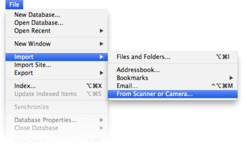

|
|
|
Capturing paper (ScanSnap and other scanners) |
|
DEVONthink Pro Office also works with the Fujitsu ScanSnap, ExactCode ExactScan, and other scanners that are not directly supported. In addition, you can add already scanned pages to your DEVONthink Pro Office database and manually convert them to searchable PDFs using the software's built-in OCR. Using a ScanSnap or ExactScan DEVONthink Pro Office's integration with the Fujitsu ScanSnap as well as ExactCode ExactScan scan software is nearly seamless. Whenever you start DEVONthink Pro Office, the application checks to see if the ScanSnap Manager or ExactScan software is installed on your Mac. If it is, DEVONthink Pro Office also checks if DEVONthink Pro Office is the default application for scanned documents. If not, DEVONthink Pro Office asks if it should change the ScanSnap Manager's or ExactScan's preferences so that all scanned files are sent to DEVONthink Pro Office when the scan is done. DEVONthink Pro Office recognizes where the incoming scans come from and runs OCR on them if necessary.
If you don't want to use DEVONthink Pro Office as the default target for your scans, you can check Never ask me again in the dialog window, and DEVONthink Pro Office will never again ask if you want to use DEVONthink Pro Office with your scan software. Reactivating scan software support: If you change your mind and want to re-activate the ScanSnap or ExactScan support, start the Terminal application and execute the appropriate commands on one line. It is best use copy/paste as the command is case-sensitive): defaults remove com.devon-technologies.thinkpro2 "ScanSnapSupport.NeverCheckForPresence" defaults remove com.devon-technologies.thinkpro2 "ExactScanSupport.NeverCheckForPresence" You can, of course, also set DEVONthink Pro Office as the default application for scanned documents in the ScanSnap Manager or ExactScan at any time without that special help from DEVONthink Pro Office. Switching off the Quick Menu option: If activating ScanSnap support does not work, it may be that the Quick Menu is still activated in ScanSnap Manager. DEVONthink Pro Office sometimes cannot switch off this option automatically, so you need to do it manually. Check if Use Quick Menu is checked in ScanSnap Manager's Dock menu. If it is checked, uncheck it. Using an unsupported scanner You can also capture paper using an unsupported scanner and import the finished scans into DEVONthink Pro Office. To do this, use the scan application that came with your scanner or a third-party scan application. Check the scan application's preferences and look out for an option that allows you to open the finished scan with another application, e.g., an image editor. Change the default application for the scan to DEVONthink Pro Office. DEVONthink Pro Office knows the identifiers of many scan applications and will convert the incoming scan to a searchable PDF if possible. If DEVONthink Pro Office does not recognize your scan application, please create a Zip archive of the application and send it to us so that we can add its identifier to a future release of DEVONthink Pro Office. Importing existing files with OCR If you already have an archive of documents that have been scanned without OCR, or if you cannot use the Capture function for whatever reason, you can import image files while applying OCR.  To import an image file while applying OCR, choose File > Import > Image with OCR . The image will be fed through DEVONthink Pro Office's OCR engine and be imported to the database as a PDF document. If you have checked Set PDF attributes in the OCR preferences, DEVONthink Pro Office will show the metadata entry window when the OCR process is completed (before the file is actually imported to the database). In the file selector, check Move to Trash if you want to move the file to the trash after it has been successfully imported with OCR. The date of the created document is set to the date of the original file. Thus, for archival purposes, the searchable document is identical to the original one. The modification date is set to the current date and time to reflect the addition of the searchable text layer. The keywords of the original PDF are retained and used as tags. |